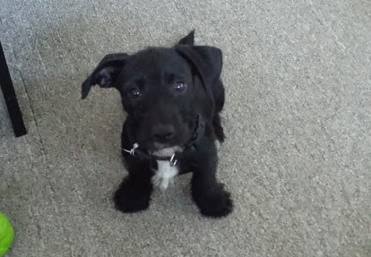
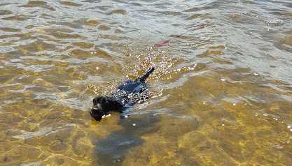

Some fun stuff about an adorable pup
...in 2014 in Georgia. Moxie was found in a box with her sister, Katie. They were resuced by a wonderful resuce organization that brough them both up to Maine. She was at an adoption even when her new Mama held her and knew instantly that they were meant to be a family.
|

|
Fun Facts
|
Moxie has travelled all over New England making new friends and seeing fun new places. Her favorite place to live though was in Southern Maine because it snowed a lot and when it wasn't snowing, the beach was a quick drive. Sometimes, she would even visit the beach during a snow storm.
Moxie goes by many nicknames, but the one she is most known for is "Moxie the Otter". This nickname was lovingly given to her due to her Otter-like body shape. She is long and low, much like an otter. She will swim, but doesn't love it quite as much as Otter's do. She would much rather be digging a hole.
